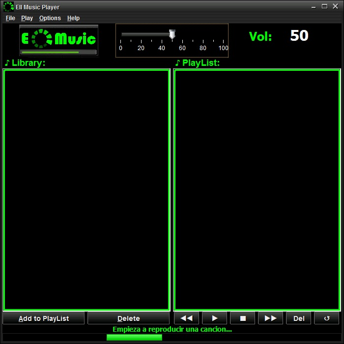

Reproductor de musica
El reproductor de musica de EII es una fraglante reproductor de musica con compatibilidad MP3,
que permite reproducir musica que le añades a la Libreria y posteriormente a a la PlayList.

Las opciones del reproductor son las siguientes:
- Boton Play: permite reproducir las canciones de PlayList. Si la cancion acaba, empieza la siguiente
- Boton Stop: permite parar la reproducion
- Boton retroceso: permite volver a la cancion anterior.
- Boton Boton siguiente: permite reproducir la cancion siguiente, en caso de tener el modo aleatorio activado, se salta a una cancion aleatoria
- Boton Del: permite quitar de la libreria y el playlist canciones